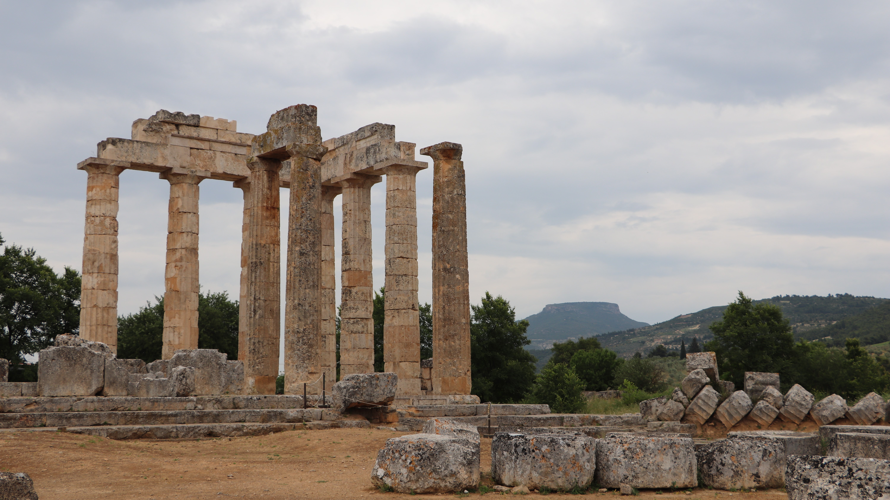

NEMEA

Nemea-Temple of Zeus
"Just as the song of Homer, those singers of verses stiched together, most often begin with a prelude to Zeus, so has this man received his first installment of victory in the sacred games at the much-hymned sanctuary of Nemean Zeus."
Pindar - Nemean Odes (For Timodemos of Acharnai, winner pancratium)
Nemea is an ancient site in the northeastern part of the Peloponnese, in Greece. Formerly part of the territory of Cleonae in ancient Argolis, it is today situated in the regional unit of Corinthia. The small village of Archaia Nemea (formerly known as "Koutsoumadi" and then "Iraklion") is immediately southwest of the archaeological site, while the new town of Nemea lies to the west.
Here in Greek mythology Heracles overcame the Nemean Lion of the Lady Hera, and here during Antiquity the Nemean Games were played, in three sequence, ending about 235 BC, celebrated in the eleven Nemean odes of Pindar.
In Greek mythology, Nemea was ruled by king Lycurgus and queen Eurydice. Nemea was famous in Greek myth as the home of the Nemean Lion, which was killed by the hero Heracles, and as the place where the infant Opheltes, lying on a bed of parsley, was killed by a serpent while his nurse fetched water for the Seven on their way from Argos to Thebes. The Seven founded the Nemean Games in his memory, according to its aition, or founding myth, accounting for the crown of victory being made of parsley or the wild form of celery and for the black robes of the judges, interpreted as a sign of mourning. The Nemean Games were documented from 573 BC, or earlier, at the sanctuary of Zeus at Nemea.
The Society for the Revival of the Nemean Games was founded in 1994, after more than 20 years of archaeological excavation at Nemea. The contemporary games, held every four years since 1996, are a form of popular education in history, as well as a counter to the commercialism of the modern Olympics. Races are organized according to age and gender, open to international participation. No medals are awarded, only crowns of palm branches and wild celery.
In 2008, some 600 people clad in tunics raced barefoot in the ruins of the ancient stadium on June 21. Two races were staged for the runners aged from 10 to 80, one of 100 metres (110 yards) and the other of 7.5 kilometres (4.7 mi). The most striking feature of this attempt was the revival of the Hoplitodromos race.
The last Nemead was held on 11th and 12 June 2016. (Wikipedia)

Nemea-Stadium

Nemea Stadium - Athletes Entrance

Nemea Stadium - Entrance